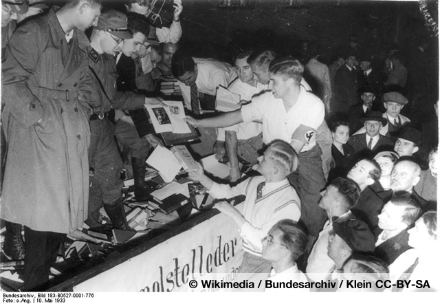

s
Im Mai und Juni 1933, im ersten Jahr der nationalsozialistischen Regierungszeit, wurden in vielen deutschen Städten in einer groß angelegten studentischen „Aktion wider den undeutschen Geist“ demonstrativ öffentliche Bücherverbrennungen durchgeführt.
Die Auswahl der „verbrennungswürdigen“ Werke basierte auf sogenannten „schwarzen Listen“, die im März 1933 im Auftrag des Propagandaministeriums erstellt wurden und die die Grundlage für die Plünderungen von Büchereien und Buchhandlungen bildeten.

Die Verfolgung und Zensur unliebsamer Autoren wurde bald nach den studentischen Bücherverbrennungen von offizieller Seite fortgesetzt. Am 13. Mai 1933 erschien im Börsenblatt für den Deutschen Buchhandel eine erste Liste von 12 bekannten deutschen Autoren, die „für das deutsche Ansehen als schädigend zu erachten“ seien.
Liste des schädlichen und unerwünschten Schrifttums
Umfangreiche Beschlagnahmeaktionen zur Sicherstellung sogenannten „schädlichen und unerwünschten Schrifttums“ fanden bereits ab 1933 statt. Betroffen waren Privatbibliotheken, Leihbüchereien, Verlage, Buchhandlungen, Antiquariate und Werksbibliotheken sowie die Bibliotheken verfolgter Organisationen (Gewerkschaften, Parteien, Arbeiterbildungsvereine, religiöse Gemeinschaften, Logen). Beschlagnahmte Bücher wurden den für die Archivierung dieser Literatur vorgesehenen Bibliotheken oft von Polizeidienststellen, Bürgermeisterämtern und Landratsämtern zugesandt.
Auf einer „Liste des schädlichen und unerwünschten Schrifttums“, die seit 1935 vom Reichsministerium für Volksaufklärung und Propaganda, genauer von der „Reichsschrifttumskammer“ regelmäßig herausgegeben wurde, fanden sich schließlich 12.400 Titel und das Gesamtwerk von 149 Autoren, die wegen ihrer humanistischen, demokratischen oder sozialistischen Gesinnung bzw. wegen ihrer jüdischen Herkunft verfolgt und verboten wurden.
Im NS-Organ „Die Bücherei 2:6“ wurde 1935 eine Auflistung jener Literatur gegeben, die verboten bzw. auszusortieren war:
- Die Werke von Landesverrätern, Emigranten und von Autoren fremder Völker, die glauben, das neue Deutschland bekämpfen und herabsetzen zu können. (H.G. Wells, Rolland).
- Die Literatur des Marxismus, Kommunismus, Bolschewismus.
- Die pazifistische Literatur.
- Die liberalistisch-demokratische Tendenz- und Gesinnungsliteratur und die Propagandisten des Weimarer Staates (Walther Rathenau, Heinrich Mann).
- Alle Werke zur Geschichte, die darauf angelegt sind, die Herkunft, das Wesen und die Kultur des deutschen Volkes herabzusetzen, die deutsche Volksordnung in ihrer Art und Rasse aufzulösen die Kraft und Bedeutung großer Führergestalten zugunsten der Masse infolge Gleichheitsgedanken zu verneinen und deren Größe in den Schmutz zu ziehen (Emil Ludwig).
- Schriften weltanschaulichen und lebenskundlichen Charakters, deren Inhalt die falsche naturwissenschaftliche Aufklärung eines primitiven Darwinismus und Monismus ist (Haeckel).
- Bücher über Künste, deren Vertreter der entarteten blutleeren, rein konstruktiven „Kunst“ positiv gewürdigt werden (Grosz, Dix, Bauhaus, Mendelsohn).
- Schriften der Sexualpädagogik und zur sexuellen Aufklärung, die sich in den Dienst des Genussegoismus der Einzelperson stellen und damit volks- und rassezerstörend im höchsten Grade wirken (Hirschfeld).
- Die dekadente, zersetzende, volksschädliche Literatur der „Asphalt- und Zivilisationsliteraten“! (Graf, H. Mann, Stefan Zweig, Wassermann, Franz Blei).
- Die Literatur jüdischer Autoren, gleichviel welcher Gebiete.
- Die Gesellschafts- und Unterhaltungsliteratur, in der das Leben und die Lebensziele auf dem Grunde einer bürgerlichen oder feudalen Lebensauffassung in oberflächlicher, unwahrer und süßlicher Weise dargestellt werden.
- Der nationalistische, patriotische Kitsch in der Literatur (P.O. Höcker!).
Bücherverbot der SS
Am 9. Juni 1941 gab das Reichssicherheitshauptamt (die ideologische Abteilung der SS zur „Bekämpfung der Gegner der nationalsozialistischen Weltanschauung“ unter der Leitung des Reichsführers-SS Heinrich Himmler) einen Erlass heraus, nach dem „Druckschriften, die in die Liste des schädlichen und unerwünschten Schrifttums eingereiht worden sind“, verboten wurden. Publiziert wurde dieser Erlass nur im „Befehlsblatt des Chefs der Sicherheitspolizei und des SD“. Bei den über 300 Titeln handelt es sich vorwiegend um religiöse, philosophische, teilweise auch metaphysische und oft auf den ersten Blick banale Titel. Die Gestapo beschlagnahmte bis zum Februar 1945 Bücher wie Das Verbrechen als Krankheit von Georg Bonne (1927), Der Hergott im Schützengraben von Max Biber oder Heilkräuter im Dienste der Schönheit. So gut wie alle Autoren der Liste sind vergessen, ihre Werke sind vielfach nicht einmal im Verzeichnis der Schriften, die 1933-1945 nicht angezeigt werden durften (Hrsg. Deutsche Bücherei Leipzig) aufgenommen. Dass Heinrich Himmler – anders als oft angenommen – eine aktive Rolle in der NS-Literaturpolitik spielte, belegt die Präambel der „Liste des schädlichen und unerwünschten Schrifttums“, in der Himmler mit einer Zensurvollmacht ausgestattet wurde und neben den Verboten, die Joseph Goebbels als Präsident der „Reichskulturkammer“ erteilte, ein „zusätzliches Verbot“ erteilen konnte.
Quellen
- Liste des schädlichen und unerwünschten Schrifttums, Stand vom 31. Dezember 1938 (Online unter berlin.de)
- Liste des schädlichen und unerwünschten Schrifttums. Jahreslisten 1939–1941. unveränderter Neudruck der Ausgabe Leipzig 1938–1941, Vaduz 1979
- Unerwuenschte Literatur in Frankreich. Ouvrages littéraires non désirables en France. 3. Auflage, Paris 1943. (online bei Gallica)
Literatur
- Dietrich Aigner: Die Indizierung „schädlichen und unerwünschten Schrifttums“ im Dritten Reich. Bibliothekar-Lehrinstitut des Landes NRW, 1968.
- Hans Benecke: Eine Buchhandlung in Berlin. Erinnerung an eine schwere Zeit. Fischer Taschenbuchverlag, Frankfurt am Main 1995.
- Wolfgang Berghofer (Hrsg.): Ausgewählte Texte und Biografien von Opfern der Bücherverbrennung 1933.
- Achim Bonte: Bücher mit Vergangenheit. Die Universitätsbibliothek Heidelberg als Sammelstelle verfemter Literatur im „Dritten Reich“. In: Theke 2001,1, S. 45–51
- Sören Flachowsky: Die Bibliothek der Berliner Universität während der Zeit des Nationalsozialismus. Logos, Berlin 2000.
- Jürgen Serke: Die verbrannten Dichter. Berichte, Texte, Bilder einer Zeit. Beltz & Gelberg, Weinheim / Basel 1977.
- Volker Weidermann: Das Buch der verbrannten Bücher. Kiepenheuer & Witsch, Köln 2008.
- Edda Ziegler: Die verbrannten Dichterinnen. Schriftstellerinnen gegen den Nationalsozialismus. Artemis & Winkler, Düsseldorf 2007.
- Erich Kästner: Über das Verbrennen von Büchern. Atrium, Zürich 2013.
Weblinks
Quelle
{kind=link}